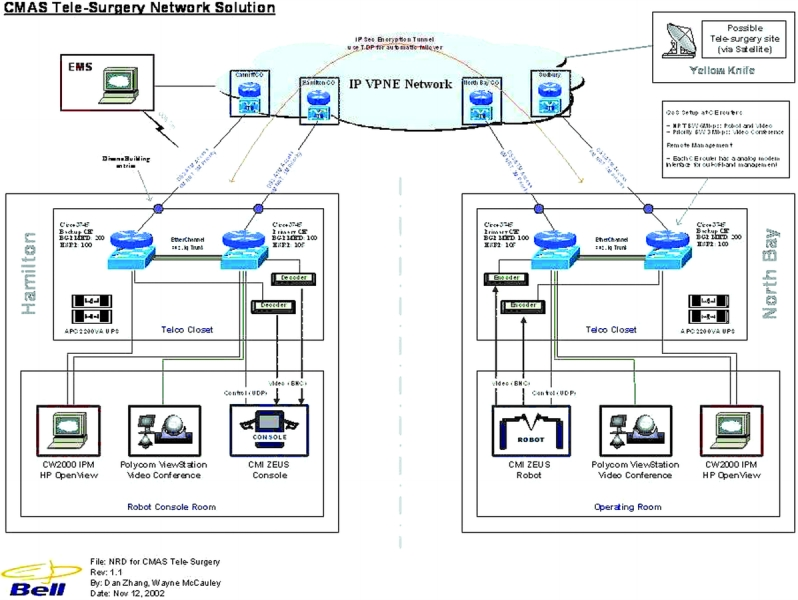

Technology Choices
Group Choices
Our group considered robotics and prosthetic limbs before settling on remote surgery. We chose telesurgery by unanimous decision because it combines several topics we were interested in, robotics, networks and healthcare. Telesurgery is promoted as a way to reach and perform complex surgeries on patients far from specialist care, but it depends on expensive robotics, low-latency networks and skilled local staff (Dohler et al., 2024; Saikali et al., 2024), which rural and underserved places often lack. In Aotearoa, only 14.3% of New Zealand general surgeons work rurally, although nearly half the population lives outside the main centers (Cowan et al., 2025). Māori also travel a median of 57 km to reach lung cancer surgery, compared with 34 km for Europeans (Gurney et al., 2024). Compared with robotics or prosthetics more broadly, this gave us a sharper question about who benefits and who is left out.
We also focused on socio-economic impacts rather than technical feasibility, because feasibility was already demonstrated by the 2001 Lindbergh Operation, when a surgeon in New York operated on a patient in Strasbourg (Marescaux et al., 2002). The trade-off is that real-world use is still limited. A systematic review found only eight human studies of remote telesurgery between 2001 and 2020 (Barba et al., 2022), so much of our evidence comes from trials and case studies rather than established systems.
Design and Implementation Choices
How telesurgery develops depends on several choices, each with a trade-off.
1. Autonomy
AI assistance could reduce surgeon workload through real-time analytics and help with instrument control (Godley et al., 2025). But AI assistance raises the question of liability. Even when an autonomous system causes harm, blame still tends to fall on the surgeon (Jamjoom et al., 2022; Godley et al., 2025). Fully autonomous surgery would no longer be considered as telesurgery since a surgeon will no longer be remotely performing the surgery. We think surgeon-controlled systems with AI support are the realistic path, because the technology has not yet been shown outside the lab, and nobody has settled who is accountable when it fails (Kim et al. 2025).
Figure 2
The IP/VPN network used to provide the telecommunication connection during the Lindbergh Operation.

2. Network
Latency is the main constraint. Motiwala et al. (2025) identified under 200 ms as ideal to use the surgical machine. The Lindbergh Operation worked at 155 ms (Marescaux et al., 2002). The surgeon did the operation on 7 September 2001 in New York while the patient was in Strasbourg Civil Hospital, in Eastern France (Marescaux et al., 2002). With dedicated fiber, 5G and eventually 6G links can keep delay low enough to perform these kinds of surgeries precisely (Dohler et al., 2024), but this kind of technology heavily favors places that already have the infrastructure set up. Cheaper public connections would reach more places however it risks delays that affect surgical performance (Xu et al., 2014).
3. Ownership and deployment
A public hub-and-spoke model as used in the first telerobotic service serving a rural Canadian community (Anvari et al., 2005), could spread specialist access more fairly. Private proprietary systems may drive innovation but concentrate care where hospitals can afford it.
4. Regulations
On top of everything, regulations is a big factor when it comes to performing remote surgeries across countries as countries have different rules and regulations for health care and surgeries. The Billing, training, and liability rules differ across borders (Elendu et al., 2025; Al Sabah & Al Haddad, 2026). Japan's guidelines show that a national framework is possible (Mori et al., 2024), but Elendu et al. (2025) found fewer than 50 documented fully remote procedures, so there has been little real-world practice to base shared rules on. A shared framework would make cross-border care workable, but it would take years to agree.
Made 16 September 2026by Sofia Malveda (based on template). Edited 30 September 2026
by Jean-Ray Durand. Edited 7 October 2026
by Jean-Ray Durand. Edited 9 October 2026
by Jean-Ray Durand.
thanks to W3C for tutorial and adapted code from Style Examples
also thanks to WDN for HTML and CSS resources and any adapted code snippets from Mozilla Developer Network